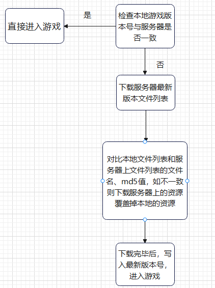
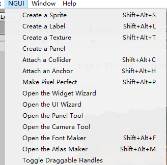
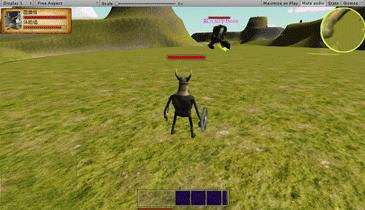
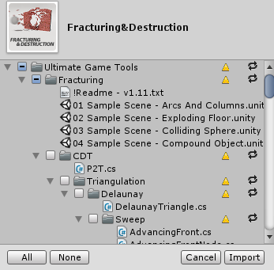

游戏开发模块拆分
选择好游戏引擎之后，我们可以对游戏主体进行拆分，因为一个游戏的工程量实在是太庞大，拆分成一个个功能模块，然后将其整合。
按照一个游戏的开发或运行周期，大致分为以下几个模块：
下面我们开始针对每一个模块进行单独的分析和技术选型吧！
一、网络通信
网络通信主要是实现两个比较重要的点，一个是如何做实现客户端和服务器的通信，还有一个是游戏对象的同步方式。
网络通信协议：
这里针对我自己对游戏的理解，做了一下网络通信协议选择和游戏的一个适用性对比，这个也不绝对，例如一款MOBA游戏，你可以用TCP做也可以用UDP实现，也能够混用，例如战斗数据传输用UDP，其他用TCP。每个协议优缺点都比较明显，我们可以通过一些策略来弥补缺点，因此协议的选择需要根据具体游戏的实际情况来。
那么咱们Mini MMORPG的话，其实选择TCP和UDP都可以，主要是需要针对协议的一些特点做一些适配，比如在延迟高的时候，为了不让玩家感受到高延迟，可以做一些客户端的行为预测（延时补偿策略），在没有收到服务器返回的指令前，先按照客户端对这个对象的一个行为预测策略，去模拟他的行为。等服务器结果发来之后，再做一个插值运算平滑地过渡到服务器的位置上。
网络同步
帧同步：核心战斗逻辑在客户端计算，客户端将计算后的结果发给服务器，服务器来做统一的转发给所有客户端。状态同步：核心逻辑都写在服务器上进行计算，然后同步给客户端，客户端不做任何战斗计算，只做表现上的东西。
不同的游戏适用于不同的同步方式，例如MMORPG游戏必须是状态同步的，因为逻辑相对复杂且庞大，且MMORPG的客户端承载有限，并不能把整个游戏的实体全部展现出来，比如很远的山和人物。例如MOBA、RTS、FPS类型游戏更适合帧同步一些，因为这类游戏对客户端表现要求“及时反馈”，且同一场战斗中对象不会特别多，在客户端的承载范围内。但是这些也都不绝对，例如很多MOBA和FPS游戏也是用状态同步方式实现的，好处就是能够有效地防止作弊和外挂。
网络通信框架
我们的MiniGame可以选择一个能够实现上述两点的网络插件，这里我们选择 Photon Unity Network（PUN）插件 来做开发示例，这是一个采用UDP协议+帧同步的一个支持房间对战的服务器框架，可以利用他便捷地实现我们MiniGame所需要的网络模块功能。
//Photon Unity Network插件通过将网络管理对象组件化来与Photon的云服务器通信，从而来同步游戏里的信息
//使用者无需关注同步细节
// Set up a MonoBehaviour to run Photon, and hide it
GameObject photonGO = new GameObject();
photonMono = (PhotonHandler)photonGO.AddComponent<PhotonHandler>();
#if !(UNITY_WINRT || UNITY_WP8 || UNITY_PS3 || UNITY_WIIU)
photonGO.AddComponent<PingCloudRegions>();
#endif
photonGO.name = "PhotonMono";
photonGO.hideFlags = HideFlags.HideInHierarchy;
//根据PhotonUnityNetwork插件的源码，是以UDP协议创建连接的
// Set up the NetworkingPeer
networkingPeer = new NetworkingPeer(photonMono, string.Empty, ConnectionProtocol.Udp);
networkingPeer.LimitOfUnreliableCommands = 40;
//不过Photon也支持其他协议，这个我们可以根据自己的需求自定义
public enum ConnectionProtocol : byte
{
Udp = 0,
Tcp = 1,
RHttp = 3
}但是这套网络底层是不开源的，因此我们也可以自己从头写一套服务器框架来做，这样可定制化程度更高，感兴趣且有能力的同学不妨一试。
Unity也为我们提供了一套Socket库，可以用Socke来简单实现一套基础的网络通信流程
//声明一个NetWorkMgr的单例类（这个我们后面会讲如何实现单例类）
public class NetWorkMgr : Singleton<NetWorkMgr>
//1.建立连接
//声明Socket以及对应的异步回调事件
Socket _socket;
SocketAsyncEventArgs _connectEvent;
SocketAsyncEventArgs _sendEvent;
SocketAsyncEventArgs _receiveEvent;
bool Connect( string ip, int port )
{
IPAddress ipAddress = IPAddress.Parse( ip );
IPEndPoint remoteEP = new IPEndPoint( ipAddress, port );
//Unity建立Socket连接对象的接口，采用TCP连接，也支持其他协议
_socket = new Socket( AddressFamily.InterNetwork, SocketType.Stream, System.Net.Sockets.ProtocolType.Tcp );
//设置ip和端口号
_connectEvent.RemoteEndPoint = remoteEP;
_connectEvent.UserToken = _socket;
//异步连接
bool willRaiseEvent = _socket.ConnectAsync( _connectEvent );
if( willRaiseEvent )
{
//未连接成功的话就等待连接
_connectDone.WaitOne();
}
else
{
ConnectCompleted( null, _connectEvent );
}
if( !Connected )
{
Disconnected = true;
return false;
}
//连接成功后，可以接受服务端的数据了
ReceiveData();
return true;
}
//2.接收数据
byte[] _receiveBuffer;
void ReceiveData()
{
//设置一个1024KB大小的接收缓冲区，将收到的网络数据存入接收缓冲区
_receiveEvent.SetBuffer(_receiveBuffer, 0, 1024*1024 );
//异步接受消息事件
bool willRaiseEvent = _socket.ReceiveAsync( _receiveEvent );
if( !willRaiseEvent )
{
//成功收到数据，在这个函数里处理数据的逻辑
_SocketReceiveCompleted( null, _receiveEvent );
}
}
void _SocketReceiveCompleted( object sender, SocketAsyncEventArgs e )
{
if( e.SocketError == SocketError.Success )
{
if( e.BytesTransferred == 0 )
{
//接收到的0字节的数据，可能因为网络连接中断了或者网络不好
}
else
{
//将收到的数据存入接收缓冲区，这里就是做一些字节流copy的操作
_CopyToReceiveBuffer( e.Buffer, e.BytesTransferred );
//继续接收数据
_Receive();
}
}
else
{
//返回SocketError了直接断开连接
Disconnect();
Disconnected = true;
}
}
//处理收到的网络数据
//Unity Mono的Update函数，每帧调用处理缓冲区数据
public void Update()
{
if( !Connected )
{
return;
}
//心跳检测机制，记一下服务器的响应时间，如果长时间未响应则中断连接，尝试重连
TimeSpan span = DateTime.Now - _lastSendTime;
if( !_responsed && span.TotalSeconds > NetworkDef.RESPONSE_EXPIRE_SECONDS )
{
_lastSendTime = DateTime.Now;
Disconnected = true;
}
//监测到断线后的处理
if( Disconnected )
{
Game.Instance.StartCoroutine( TryReConnect() );
Disconnected = false;
}
//处理接收缓冲区的数据，解析数据协议，调用到游戏内的接口中，这边就不再详细实现了
ProcessReceiveBuffer();
}关于上述代码缓冲区的设计，可以看这个示意图来进行理解，同样发送数据的逻辑，也是通过将要发送的数据加入发送缓冲区来发送。
具体什么时候把缓冲区的数据发送到服务器、什么时候接收缓冲区的数据，是由TCP底层策略来实现的，Unity应用层可以不需要关注。
二、客户端框架
单例模式（Singleton）
有很多管理类需要在游戏中有唯一实例，用来管理游戏中的某一部分的需求，因此我们要用C#实现一个单例模式基类，用来实现这些管理类
//普通单例类
public class Singleton<T> where T : new() //由于是管理类基类，因此需要声明为泛型类型
{
private static T _instance;
static object singletion_lock = new object(); //线程安全
public static T Instance
{
get
{
if (_instance == null)
{
lock (singletion_lock)
{
if (_instance == null)
_instance = new T();
}
}
return _instance;
}
}
}
//MonoBehavior单例类，有时候我们需要一个类继承MonoBehavior且全程只能有一个不被销毁
//相当于把一个MonoBehavior类“静态化”
public class MonoSingleton<T> : MonoBehaviour where T : Component
{
private static T _instance;
public static T Instance
{
get
{
if (_instance == null)
{
_instance = FindObjectOfType(typeof(T)) as T;
if (_instance == null)
{
GameObject obj = new GameObject();
_instance = (T)obj.AddComponent(typeof(T));
}
}
return _instance;
}
}
public virtual void Awake()
{
DontDestroyOnLoad(this.gameObject);
if (_instance == null)
{
_instance = this;
}
}
}实现好管理类基类后，我们可以开始写其他的一些管理类，来继承这个类就好了。
//例如声明一个网络管理类
public class NetWorkMgr : Singleton<NetWorkMgr>网络同步（PhotonServer）
我们的网络框架使用PhotonServer服务器引擎来实现，同步框架示意图如下，类似于帧同步的一种网络同步方式：
主客户端PlayerX向我们这个房间的GameServer发送了一个事件，然后GameServer将这个事件，同步给该房间内的所有其他客户端。也就是主客户端是一切行为的发起源，服务器只是做转发。
这个框架理解了，就可以开始编写同步代码了。
安装配置：
PhotonServer的安装和下载以及服务器配置，可以参考下面链接，或者网上找一找相关资料。
如何同步：
我们是依靠PhotonServer这套框架实现网络对象同步的。
首先根据PhotonServer的框架设计里，每一个需要联网（需要同步给别的玩家）的对象，都需要挂一个PhotonView脚本
根据参数可以看出，PhotonView组件主要用于管理和区别服务器对象，服务器根据组件的ViewID作为唯一标识符，以区别同一预制体（prefab）生成的不同实例。
//新增一个PlayerNetWork.cs 挂载到Player对象上，用于处理玩家的数据操作上传和同步
public class PlayerNetwork : Photon.MonoBehaviour {}
//多人MMORPG游戏， 一个客户端对应着多个玩家，多个PhotonView，而不是一个
//传输玩家要同步的信息
void OnPhotonSerializeView(PhotonStream stream, PhotonMessageInfo info)
{
//control.invoke(参数delegate)方法:在拥有此控件的基础窗口句柄的线程上执行指定的委托
//OnSerializeMethodInfo.Invoke((object)this.observed, new object[] { pStream, info });
//wrting方法只能用于MasterClient
if (stream.isWriting)
{
//将自己（可以是玩家，可以是怪物，可以是任何对象）的位置信息同步到服务器
stream.SendNext((int)playerAnimation.m_state);
stream.SendNext(transform.position);
stream.SendNext(transform.rotation);
}
else
{
//接收服务器同步过来的其他玩家的信息，当收到这条消息时，这里的PhotonView其实是该客户端内其他玩家的PhotonView的OnPhotonSerializeView方法，同步该客户端内其他玩家的位置给该客户端
//也就是服务器调用了所有房间内的客户端，各个客户端中其他挂有PhotonView的对象的OnPhotonSerializeView方法，然后通过本机客户端其他挂有PhotonView的Update方法将各自的位置和状态同步到本机客户端
playerAnimation.SetPlayerState ((PlayerState)(int)stream.ReceiveNext ());
correctPlayerPos = (Vector3)stream.ReceiveNext ();
correctPlayerRot = (Quaternion)stream.ReceiveNext ();
}
}
//同步场景内的其他挂载着PhotonView的对象
private Vector3 correctPlayerPos = Vector3.zero; //其他玩家角色的正确位置
private Quaternion correctPlayerRot = Quaternion.identity; //其他玩家角色的正确旋转角度
void Update()
{
if (!photonView.isMine) { //同步别的玩家的位置，只需要同步别的photonview的位置
//采用插值法使得当前玩家角色场景中的其他玩家角色角色能够平滑地移动和旋转
transform.position = Vector3.Lerp (transform.position, correctPlayerPos, Time.deltaTime * 5);
transform.rotation = Quaternion.Lerp (transform.rotation, correctPlayerRot, Time.deltaTime * 5);
}
}
//上面讲了怎么同步玩家的位置和信息，那么如果广播玩家的操作呢
//例如玩家的攻击操作，如何让别的客户端的玩家看到
//PlayerAttack.cs
//玩家对玩家角色的操作，是在客户端，但攻击对怪兽所造成的伤害，确实在服务器端实现的
//玩家仅仅是操纵玩家角色，同步的信息都是服务器端实现的。这一句话的意思是，玩家执行攻击动作，并同步给MasterClient，然后MasterClient会通过服务器同步给其他所有客户端
this.photonView.RPC("DidAttack", PhotonTargets.MasterClient);
/// 玩家在本地客户端按了Attack键，就执行 RPC("DidAttack", PhotonTargets.MasterClient);
/// 此时，有RPC标记的该方法在主客户端执行，且会同步给房间内的所有玩家。在玩家角色攻击范围内并且在视觉范围内的怪兽，都受到伤害
[RPC]
public void DidAttack()
{
//只有主客户端才可以进行此操作（所谓主客户端是创建房间的人，也就是上面Photon同步框架图中的PlayerX）
if (!PhotonNetwork.isMasterClient)
return;
//xxxxxxxxxxxx
}
//除了给主客户端同步RPC，也有直接给其他所有玩家同步，或者给某个指定ViewId的玩家同步。
this.photonView.RPC("DidAttack", PhotonTargets.MasterClient); //同步给主客户端，主客户端上报服务器
this.photonView.RPC("SetInActive", PhotonTargets.Others, localPlayerId);
this.photonView.RPC("HideCharacter", PhotonTargets.All);//只在本地客户端上同步消息订阅和发布（EventListener）
订阅和发布模式是游戏里必不可少的一个设计模式，因为当游戏模块越来越多之后，为了程序的可扩展性、低耦合性，需要能够高效地进行一些消息和数据的传递。
发布订阅模式模型：
//先定义一些事件
enum MessageEvent
{
eMessageEvent_Login, //通知登录
eMessageEvent_Loading, //通知可以loading了
eMessageEvent_EnterMain, //通知进入主界面了
}
//定义一个字典，用来管理所有的事件
static public Dictionary<MessageEvent, Delegate> MessageList = new Dictionary<MessageEvent, Delegate>();
//消息订阅
public void AddListener(MessageEvent msg_id, Delegate func) {
MessageList[msg_id] = MessageList[msg_id] + func;
}
//消息触发
public void SendMessage(MessageEvent msg_id) {
Delegate func;
//去事件管理列表中找，有没有这个事件的订阅记录，有的话，就执行对应绑定的方法
if (MessageList.TryGetValue(msg_id, out func)) {
if (func != null) {
func();
}
}
}
//在我们登录界面初始化的时候，订阅一下这个消息
//LoginPanel.cs
public void Ctor()
{
//在login界面初始化的时候，订阅了这个消息，并且绑定一个OpenLoginPanel的方法，一旦收到这个消息，就会触发这个方法
MessageMgr.AddListener(MessageEvent.eMessageEvent_Login,OpenLoginPanel);
}
//NetWorkMgr.cs
//网络层收到服务器的可登录通知，发布登录消息
MessageMgr.SendMessage(MessageEvent.eMessageEvent_Login);//发布后，登录界面就打开了从上面的一个示例可以看出，这种设计模式下，界面和逻辑层是完全分离的，通过消息的一个订阅和发布来完成一些事件的传递，将程序模块与模块之间的耦合性降到最低。
策划数据、配置表缓存
策划表是游戏必不可少的一部分，游戏里的一些设置、数值设定等都是策划配置在一个策划表的，一般都是用功能强大且通用的Excel。
但是我们Unity代码是无法直接读Excel中的数据的，因此需要工具将Excel中的表转成Unity可以解析的一些文本格式，例如Lua的Table，Json格式，XML格式等，这部分我们可以直接用前辈们造好的轮子，就不用自己去写了。
转成对应格式后，由于我们需要在游戏中实时使用这些策划数据，因此我们要创建一个DesignManager类，来解析这些数据并且缓存起来，便于我们开发时使用。
//解析XML或者Json的库，也可以使用开源库来做，这里就不讲具体的解析细节了
public class DesignManager : Singleton<DesignManager>
//定义一个道具表的数据结构
public class ItemData
{
public uint Id;
public string name;
}
public DesignManager()
{
Dictionary<int, ItemData> Item_design = new Dictionary<int, ItemData>();
Item_design = ParseXML("design/Item"); //封装一个ParseXML方法来解析xml格式的策划数据表，并且返回一个dict
}
//再封装一个取数据的方法，后续需要取道具的一些数据，就通过这个方法取就好了
public static ItemData GetItemById(uint Id)
{
if (DesignManager.Instance.Item_design.ContainsKey(Id))
{
return DesignManager.Instance.Item_design[Id];
}
return null;
}
//外部函数取道具信息
ItemData item = DesignManager.GetItemById(ItemId);通过这样的设计，将数据的解析和外部调用逻辑进行分离，所有数据通过策划表缓存中取，扩展性好且方便使用，但是如果需要考虑热更新，那么就需要别的方案了。因为策划数据已经被我们缓存了，直接更新策划表是没有作用的。
技能系统（Skill）
MMORPG游戏核心就是技能机制，而技能是一个很宽泛的一个设计，这里我们只讲几个比较常规常用，大家比较好理解的技能来做实现，以及如何设计一个技能框架。
首先还是用我们面向对象的编程思想，设计一个Skill基类，实现一些所有技能都需要的通用行为
public enum SkillType
{
Scope,//范围型技能
Bullet,//弹道类技能
Link,//指向性技能
Normal,//常规技能
}
public class SkillBase {
//为了解耦，我们一般不继承MonoBehavior类，将GameObject和Transform显示声明
public int Id; //技能唯一id
public GameObject skill_obj = null;
public Transform skill_transform = null;
public string resName;//资源路径
public int skilltime;//技能持续时间
public SkillType m_type; //技能类型
public bool IsOver //声明周期是否结束
public string resName;//资源路径
public void CreateSkill()
{
//实例化对象
Object o = AssetManager.Instance.LoadRes(resName);
skill_obj = Instantiate( o ) as GameObject;
//加进SkillManager中统一管理
SkillManager.Instance.AddSkillObj(Id,this);
LoadSkillFinish();
}
public virtual void LoadSkillFinish()
{
//用来给子类重写这个方法，分别实现完成加载后的一些初始化工作
IsOver = false;
}
//技能的更新类，用来更新位置、声明周期等,子类可重写
public virtual void Update()
{
skilltime -= Time.deltaTime;
//当技能的生命周期结束后，在SkillManager类中将它移除
if (skilltime<0)
IsOver = true;
}
}
//实现一个普通范围型AOE技能
public class ScopeSkill : SkillBase
{
public GameObject Point;//技能释放的一个位置标准点（用来定位这个技能的位置和角度）
public ScopeSkill()
{
m_type = SkillType.Scope;
}
public override void LoadSkillFinish()
{
//设置这个技能生成的位置（如鼠标位置、指向性范围一定距离处等）
base.LoadFinish();
skill_obj.transform.rotation = Quaternion.LookRotation(this.Point.tansform.rotation);
skill_obj.transform.rotation.position = this.Point.tansform.position;
}
}除了上述的AOE技能，我们还可以依次实现上面定义的一些技能或者我们自己想做的一些技能，关键就是要做好技能的可扩展性。
另外还需要一个SkillManager管理类来全局管理这些技能的创建、更新、销毁。
public class SkillManager : Singleton<SkillManager>
{
public Dictionary<Int, SkillBase> m_SkillDic = new Dictionary<Int, SkillBase>();
public List<SkillBase> m_OverSkillList = new List<SkillBase>();
//添加技能到表表
public void AddSkillObj(Int Id, SkillBase skill)
{
if (!m_SkillDic.ContainsKey(Id))
{
m_SkillDic.Add(Id, skill);
}
}
//创建一个范围型AOE技能
public SkillBase CreateScopeSkill(string resName, GameObject parent)
{
//创建一个上面的ScopeSkill对象
ScopeSkill scope_skill = new ScopeSkill();
scope_skill.resName = resName;
//取到资源路径后可以实例化这个技能对象了
scope_skill.CreateSkill();
scope_skill.Point = parent;
//以技能唯一Id作为key，加入我们的技能管理列表
AddSkillObj(scope_skill.Id, scope_skill);
return scope_skill;
}
//同样后续可以扩展更多的创建技能接口
public SkillBase CreateBulletSkill(string resName, GameObject parent)
{
//**************
}
//更新所有管理的技能
//该函数在Main类中调用
public void Update()
{
foreach (var skill in m_SkillDic.Values)
{
skill.Update();//执行skill本身的Update逻辑
if (skill.IsOver == true)
{
//用一个list维护生命周期结束的技能，在Update后，统一销毁掉
m_OverSkillList.Add(skill);
}
}
}
}管理资源加载和更新模块
这个需要分两块来做，一个是资源的加载，一个是资源的更新。
public class AssetManager : Singleton<AssetManager>1.资源加载
我们的资源最终会打包成AssetBundle，我们在Editor模式下可以直接在我们的资源目录内加载对应的资源，如果在发布平台，那么我们需要加载的是ab包文件。
public Object LoadRes(string path)
{
//Editor模式下直接从Resource目录读取即可，方便我们本地开发
#if UNITY_EDITOR
return Resources.Load(path);
#endif
//加载对应路径的ab包资源
//这里应该根据我们打包的AssetBundle依赖文件里的信息，先将依赖的文件加载进来，再加载我们的目标文件
//涉及打包相关，这里就不详细讲
byte[] AbBytes = File.ReadAllBytes( path );
AssetBundle assetBundle = AssetBundle.CreateFromMemoryImmediate( AbBytes );
return assetBundle.mainAsset;
}
//用加载得到的资源，实例化一个GameObject
Object o = AssetManager.Instance.LoadRes("res/UIMessage");
GameObject go = Instantiate( o ) as GameObject;2.资源更新
在游戏开发初期，可以不太关注资源更新部分，可以把更多的时间和经历放在打磨游戏细节上。但如果之后这个游戏要上线长期运营，那么就离不开资源的热更新。Unity3d提供一套资产管理解决方案，可以将Unity项目内资产按一定策略打包成AssetBundle文件，可以通过将游戏的资源打包成AssetBundle，并且将每个文件的版本信息以及md5值单独存成一个配置文件，并且生成一个版本号，放在服务器上来进行动态热更新。
一般更新流程：

按照上述流程，就可以实现我们的资源动态更新了。资源动态更新的好处有很多，例如缩小包体的大小，动态更新版本（无需再走提审流程），热修复一些bug等。
资源更新的这个更新的流程不仅仅适用于Unity，其他游戏引擎基本也都是同样的解决方案，比如Cocos2d-x官方的AssetManager资源更新解决方案。思路基本大同小异，实现细节上会有一些差异化，可以根据我们项目的特点和需求自定义。
UI开发
我们选择工业界广泛应用的经典UI插件，NGUI。
首先需要将NGUI插件导入我们Unity项目中，可以通过AssetStore购买或者网上下载unitypackage包导入。
导入之后，就可以利用NGUI进行界面开发了

在进行UI开发之前，首先要搞清楚UI是如何渲染在我们屏幕上的。实际上UI在Unity中也是通过构建网格然后通过UI摄像机渲染到我们屏幕上的，和其他3D资产一样也是需要通过构建DrawCall的，因此科学地搭建UI界面也是提升性能必须要做的一件事。
NGUI的核心：UIPanel、UIWidget、UIDrawcall。Panel和Widget是会显示在Hierarchy层级中的，而UIDrawcall则不会
NGUI层次结构：
Static List：全局的List，管理着UI下所有Panel
UIPanel：每个Panel有两个属于自己的List：一个List 用来存储子节点，一个List< UIDrawcall >用来构建DrawCall
NGUI的DrawCall构建：
根据上图可以看到NGUI的Drawcall构建是按照Widget的深度来进行排序构建，当他们的材质或者贴图不一样时，就会单独构建一个Drawcall来渲染
根据这个可以看出，我们可以尽量将同材质的对象放到一个Panel下构建，就可以减少UI渲染的Drawcall了。
大家有兴趣的可以看一下NGUI的源码，里面会有详细的渲染构建过程
例如上面说的Drawcall的合并和构建代码在UIPanel.cs的一个合并设计，就在NGUI的FillAllDrawCalls函数中，也是NGUI框架中的一个核心逻辑了。
//源码剖析
void FillAllDrawCalls ()
{
//由于要重新构建DrawCall，先将之前的DrawCall全部清理掉
for (int i = 0; i < drawCalls.Count; ++i)
UIDrawCall.Destroy(drawCalls[i]);
drawCalls.Clear();
//标记组件初始化，用来记录和判断材质、贴图、shader是否一致
Material mat = null;
Texture tex = null;
Shader sdr = null;
UIDrawCall dc = null;
int count = 0;
//对我们的Widget进行排序（Widget有渲染优先级，根据Widget的Panel来构建绘制顺序）
if (mSortWidgets) SortWidgets();
//遍历排好序的Widget，开始构建新的DrawCallList
for (int i = 0; i < widgets.Count; ++i)
{
UIWidget w = widgets[i];
if (w.isVisible && w.hasVertices)
{
Material mt = w.material;
Texture tx = w.mainTexture;
Shader sd = w.shader;
//如果这个Widget的Material、Texture、Shader与上一个Widget不一致
//那么这种情况就需要重新构建一个DrawCall了
if (mat != mt || tex != tx || sdr != sd)
{
if (dc != null && dc.verts.size != 0)
{
drawCalls.Add(dc);
dc.UpdateGeometry(count);
dc.onRender = mOnRender;
mOnRender = null;
count = 0;
dc = null;
}
mat = mt;
tex = tx;
sdr = sd;
}
if (mat != null || sdr != null || tex != null)
{
if (dc == null)
{
//构建本次DrawCall的几个要素，material、Texutrue、Sahder以及depth
dc = UIDrawCall.Create(this, mat, tex, sdr);
dc.depthStart = w.depth;
dc.depthEnd = dc.depthStart;
dc.panel = this;
}
else
{
int rd = w.depth;
if (rd < dc.depthStart) dc.depthStart = rd;
if (rd > dc.depthEnd) dc.depthEnd = rd;
}
//将本次新DrawCall的数据写入DrawCallBuffer等待绘制
w.drawCall = dc;
++count;
if (generateNormals) w.WriteToBuffers(dc.verts, dc.uvs, dc.cols, dc.norms, dc.tans);
else w.WriteToBuffers(dc.verts, dc.uvs, dc.cols, null, null);
if (w.mOnRender != null)
{
if (mOnRender == null) mOnRender = w.mOnRender;
else mOnRender += w.mOnRender;
}
}
}
else w.drawCall = null;
}
}来自己搭一个界面测试一下
UIPanel组件会把这个Panel需要构建多少个DrawCall以及每个DrawCall绘制的内容和三角形数都显示在面板上，供我们调整，尽可能的减少DrawCall。 根据上图显示，
UI开发上还有很多有趣的地方，可以实现很多很炫酷的效果，大家有兴趣的话这也是一个值得深入学习的方向。
我们通过NGUI把界面拼好后，如何去高效的管理（加载、卸载）他们呢？
//老样子，贯彻面向对象开发思想，先创建一个UI基类
//基类同样还是以规范类的行为和提供通用接口为主
//不继承MonoBehavior，实现界面与Script解耦，有很多把脚本跟界面绑定的，不建议采用那种UI开发方式，耦合度太高。
public abstract class UIBase
{
private Transform root;
private string resName;
//这些定义成抽象类，让子类自己去实现
protected abstract void Init();
protected abstract void InitUI();
protected abstract void AddListener();//各自子类自己实现，通过上面的消息订阅机制去订阅一下UI的消息
protected abstract void RemoveListener();//UI销毁时需要把订阅的事件移除
public bool CreateUIRes()
{
if (root)//避免重复创建
{
return false;
}
GameObject ui_obj = AssetManager.LoadUI(resName);
ui_obj.transform.parent = uicamera.gameObject;//将界面挂在到UICamera上（UIRoot）
if (ui_obj == null)
{
return false;
}
root = obj.transform;
root.gameObject.SetActive(false);//创建后默认隐藏，等于预先加载好，避免那种大量UI同时实例化导致的内存峰值引起的卡顿
return true;
}
//惰性创建，调用Show的时候才会调用
public void ShowUI()
{
if (mRoot == null)
{
if (CreateUIRes())
{
InitUI();
}
}
if (root)
{
root.gameObject.SetActive(true);
AddListener();
}
}
}上面讲了UI类要如何设计，这里讲一下UIManager类要如何管理这些界面
//给界面取名便于管理
public enum UIName{
login,
loading,
main,
fight,
}
//老样子，Manager类需要是单例
public class UIManager : Singleton<UIManager>
{
public Dictionary<UIName, UIBase> ui_dict = new Dictionary<UIName, UIBase>();
public UIManager()
{
//先把各界面的对象创建出来缓存进去，但是不加载资源
ui_dict[UIName.login] = new UILogin();
ui_dict[UIName.loading] = new UILoading();
ui_dict[UIName.main] = new UIMain();
ui_dict[UIName.fight] = new UIFight();
}
//UI有两种加载方
//1.惰性加载：使用的时候再创建且显示，适用于当前场景UI不是很多的情况
public void ShowUI(UIName name)
{
UIBase ui;
if(!ui_dict.TryGetValue(name , out ui))
{
return;
}
ui.ShowUI();
}
//2.预加载
//在UIManager中预先创建好，但是不渲染，先隐藏
//预加载适用于某个场景UI特别多的时候，我们可以在loading或者上一个场景就提前把资源加载好，防止出现因为界面过多导致的性能瓶颈。
public void PreLoadUI()
{
//将UI全部预加载，这里我们可以在初始化的时候给UI分类型，就可以加载我们想要的部分的类型UI了
//一般以场景来分UI比较合适，因为一般UI加载是按场景来加载的。
foreach (UIBase ui in ui_dict.Values)
{
ui.CreateUIRes();
}
}
}游戏状态管理类（游戏状态机）
在我们游戏中可以分为很多状态，状态的分类可以有多种依据，例如以当前的场景为加载依据（登录、加载、世界场景、副本场景等等），将游戏分成多个状态，好处就是当我们游戏状态发生改变的时候，可以做一些事件的统一处理。例如当我们从副本场景切回到世界场景，要对副本场景里的一些资源做统一的清理操作以及对世界场景做一些预加载操作，有状态这个标记我们就能清楚地知道“什么时候应该做什么事”。
//首先还是定义一些可能要用到的状态
enum GameStatus
{
Update,//更新
Login,//登录
World,//世界场景
GamePlay,//副本
}
//定义一个状态接口 用来规范我们状态的设计行为
interface Interface_GameStatus
{
void SetStatus(GameStatus status);//设置当前状态
void EnterStatus();//进入该状态，要做的事
void QuitStatus();//离开该状态，要做的事
GameStatus GetStatus();//获取到当前我们游戏出于的状态
}
//实现一个副本状态类
public class GamePlayState : Interface_GameStatus
{
public GameStatus GetStatus()
{
return GameStatus.GamePlay;
}
public void Enter()
{
//加载副本场景的UI
AssetMgr.Instance.LoadUI("Play/PlayUI");
//订阅一个副本结束的消息，当副本结束时，调用副本资源的一些清除工作
MessageMgr.AddListener(MessageEvent.eMessageEvent_GamePlayOver,GamePlayOver);
//生成副本场景里的资源，比如场景，怪物等等
InitMap();
InitMonster();
}
public void GamePlayOver()
{
//Clean
}
}通过状态，来控制游戏的进程推进，通过状态接口来规范状态的实现和操作，实现了一个扩展性强的简易游戏状态机。
主模块（AppEntry）
上面我们设计的管理类都是继承Singleton的单例类，完全与引擎的MonoBehavior解耦，但由于我们一定需要有一个Update类（例如Skill的生命周期、资源的更新），因此我们必须要有一个继承MonoBehavior的类，我们就叫Main类好了，顾名思义就全局管理所有Manager的类
//将Main声明成一个MonoBehavior单例类
public class Main : MonoSingleton{
//在Awake中设置一些游戏全局的设置 如雾效渲染、屏幕黑屏
void Awake(){
Screen.sleepTimeout = SleepTimeout.NeverSleep;
RenderSettings.fog = false;
}
//start中可以做一下预加载工作
void Start () {
//预加载，减少进入游戏资源加载卡顿
DesignManager.Instance.Preload();//预加载策划表
//预加载特效信息
SkillManager.Instance.PreloadSkillEffect();
}
//最重要的Update函数，用于更新游戏里所有的Manager
void Update ()
{
//游戏状态机更新
GameStatusMgr.Instance.Update();
//更新技能
SkillManager.Instance.Update();
//更新资源
AssetManager.Instance.Update();
//更新网络模块
NetworkManager.Instance.Update();
//UI更新
UIManager.Instance.Update();
}
//另外可以在Main中定义一些App生命周期相关的函数，用来实现一些跟App生命周期挂钩的需求
//例如在App退出的时候主动断开与服务器的连接，减少服务器的连接压力。
void OnApplicationQuit()
{
NetworkManager.Instance.DisConnect();
}
}三、核心玩法
玩家操作
3D的MMORPG游戏中，玩家一般的操作自由度相对较高，一般包含行走、跳跃、加速跑、攀爬、攻击、防御等行为，这些操作都是需要程序来一一实现的，这些操作将最直接地影响玩家的体验，因此除了开发功能，更多的时间需要用到参数调试上，比如玩家的移动速度，攻击动作前摇，视角的旋转范围和速度等，也就是我们玩家所说的“手感”。
我们先给玩家加上一个PlayerController脚本，用来实现玩家的各种操作
另外我们给玩家加上一个Unity自带的CharacterController组件来帮我们实现一些角色运动的功能
我们在Unity的InputSetting先配置一下操作快捷键，例如空格键代表跳跃。
//先算出玩家的移动方向向量
Vector3 moveDirection = new Vector3(Input.GetAxis("Horizontal"), 0, Input.GetAxis("Vertical"));
moveDirection = transform.TransformDirection(moveDirection);//局部坐标系转换到世界坐标系
//乘一个速度，相当于玩家每帧可以沿这个方向位移多少距离
moveDirection *= walkSpeed;
//PlayerAnimation是同样挂接在Player上的脚本，用来实现玩家的动画切换
playerAnimation = GetComponent<PlayerAnimation>();
//当速度大于一定值的时候才给玩家播放行走动画，防止误触的情况
if (moveDirection.magnitude > 0.5)
playerAnimation.SetPlayerState(PlayerState.walk);
else
playerAnimation.SetPlayerState(PlayerState.idle);
//使用重力来结束跳跃，使玩家能够落下，并确保他正在接触地面
moveDirection.y -= gravity * Time.deltaTime;//deltaTime完成一帧所需要的时间
//跳跃
//按空格，跳跃控制，这个"Jump"具体对应哪个键位可以在Unity的InputSetting中修改
if (Input.GetButton("Jump"))
{
ResetState();//将其他状态（攻击、行走等）重置，准备切换到跳跃状态
playerAnimation.SetPlayerState(PlayerState.jump);
StartCoroutine(DoJump());
moveDirection.y = jumpSpeed;//给玩家运动方向向量的y方向加一个速度，玩家就会向上位移摄像机跟随
摄像机拍摄到的东西就是玩家能看到的东西，因此摄像机的位置决定了屏幕渲染的内容。 同样摄像机的拍摄角度，镜头可旋转的范围，镜头旋转的速度等也会影响玩家的直接感官，没有调整好的话甚至会引起头晕，因此“摄像机体验”也是MMO开发的重点研究对象。
给我们游戏的主摄像机挂上一个用来实现摄像机跟随的脚本，跟随的Target设置成我们Player身上的一个Transform（MyPosition）
//摄像机的一些参数设计，这些网上以及Unity官方教程都有比较详细的例子和已经调整好的参数，我们可以直接使用，并且针对我们需求做一些改动
public class PlayerCamera : MonoBehaviour
{
/// 镜头目标
public Transform target;
/// 镜头离目标的距离
public float distance = 10.0f;
/// 最大镜头距离
public float maxDistance = 20.0f;
/// 鼠标滚轮拉近拉远速度系数
public float scrollFactor = 10.0f;
/// 镜头旋转速度比率
public float rotateFactor = 5.0f;
/// 镜头水平环绕角度
public float horizontalAngle = 45;
/// 镜头竖直环绕角度
public float verticalAngle = 0;
private Transform mCameraTransform;
}
//这里我们选择在LateUpdate中运行摄像机跟随的逻辑
//因为LateUpdate是晚于Update执行的，而玩家运动逻辑一般是在Update中实现的，逻辑上比较符合玩家先运动摄像机再跟随。
//另外也是防止出现玩家还没过去，摄像机就移动了的这种情况
void LateUpdate()
{
MoveCamera();
}
//摄像机跟随函数
void MoveCamera()
{
//滚轮控制摄像头与目标的距离，设置一个合理区间
distance = Mathf.Clamp(distance - Input.GetAxis("Mouse ScrollWheel") * 200 * Time.deltaTime, 0.1f, maxDistance);
//按住鼠标左右键移动，镜头随之旋转
var isMouseLeftButtonDown = Input.GetMouseButton(0);
var isMouseRightButtonDown = Input.GetMouseButton(1);
if (isMouseLeftButtonDown || isMouseRightButtonDown)
{
var axisX = Input.GetAxis("Mouse X");
var axisY = Input.GetAxis("Mouse Y");
horizontalAngle += axisX * rotateFactor;
//保证上下旋转不会看到地面的下方
verticalAngle = Mathf.Clamp(verticalAngle + axisY * rotateFactor, -100, 0);
if (isMouseRightButtonDown)
{
//鼠标右键拖动摄像机，人物也会跟随着旋转
//这里是直接修改了玩家的rotation，要想表现得自然一点可以做一个插值运算平滑过度过去
if (target)
target.parent.rotation = Quaternion.Euler(0, horizontalAngle, 0);
}
}
//按镜头距离调整位置和方向
var rotation = Quaternion.Euler(-verticalAngle, horizontalAngle, 0);
var offset = rotation * Vector3.back * distance;
if(target)
mCameraTransform.position = target.position + offset;
mCameraTransform.rotation = rotation;
}战斗判断
MMORPG战斗模式可以分为多种，这个主要看游戏设定的核心玩法是什么样的。我们的MiniMMO的话，就先实现一个最基础的近战战斗。
同样先给玩家绑一个用来处理攻击动作的脚本
//我们先设计一个playerData类，绑定在玩家身上的一个全局数据管理组件
//里面维护了一些核心玩法相关的数组，跟上面客户端框架设计的理念一样，分开管理可以降低各个组件之间的耦合度
//PlayerData.cs
public class PlayerData : MonoBehaviour
{
public List<GameObject> monsters;//进入玩家角色的监控范围（即Collider）的怪兽
public List<GameObject> otherPlayers;//进入玩家角色的监控范围（即Collider）的其他玩家角色
}
//PlayerAttack.cs
//攻击怪物的逻辑
if (playerData.monsters.Count > 0)
{
foreach (GameObject monster in playerData.monsters)
{
if (!monster) continue;
var distance = Vector3.Distance(monster.transform.position, this.transform.position);
// 找出怪兽相对于玩家角色的位置和角度
var relativeLocation = transform.InverseTransformPoint(monster.transform.position);
var angle = Mathf.Atan2(relativeLocation.x, relativeLocation.z) * Mathf.Rad2Deg;
//判断玩家的角度和距离是不是在可攻击范围内（防止出现背对着怪物或者距离怪物太远也能攻击到怪物的情况）
//假如之后我们要设计一些攻击距离更远的武器，就可以动态配置PlayerData.attackRadius来实现通用设计
if (distance <= PlayerData.attackRadius && Mathf.Abs(angle) <= PlayerData.viewAngle)
{
//每次攻击给怪兽一个攻击力*1~2之间的随机数的伤害值
float attackDamage = attack*Random.Range(1,2);
monster.GetComponent<MonsterStatus>().ApplyDamage(attackDamage);
}
}
}
//同样攻击人的逻辑类似，就不展开说了来看一下实现的攻击的效果

这儿我们只是实现了一下最简单的普通攻击，实际开发中要达到很好的攻击手感，要做的和计算的东西远不止于此，这里只是提供一个设计思路，后续大家有兴趣的可以深入研究一下。
状态机
游戏有状态机，我们的游戏主角、怪物也需要有一个状态机，来控制玩家的各种状态。
有限状态机属于设计模式范畴的一种设计，为的也是用扩展性更好的代码实现玩家的各种状态之间的切换，如：walk、run、Idle、Attack、Dead等。如果简单的做切换的话，可能就是大量的if else逻辑，可读性不好且扩展性差，代码耦合度太高。
Unity内置的一个动画状态机，就是一个有限状态机：
但这个动画状态机局限于控制动画的状态切换，因此游戏内对象的自定义状态需要我们自己去实现。
//定义我们游戏需要的几种状态类型
public enum FSM_DEF
{
IDLE,
WALK,
RUN,
DEAD,
}
//老样子实现一个状态基类
public abstract class FSMBase
{
public abstract void OnUpdate();
public virtual void Enter()
{
}
public virtual void Exit()
{
}
}
//除了基类，我们也可以使用接口来实现，更加规范因为所有继承接口类的子类都需要把接口的方法全部实现
public interface FSMBase
{
FSMBase State { get; }
void Enter(GameObject obj);//进入该状态做的事情
void Exit(GameObject obj);//离开该状态做的事情
void OnUpdate(GameObject obj);
//每帧更新
}
//实现具体的状态机——run
public class FSM_Run : FSMBase
{
public static FSM_Run Instance = new FSM_Run();
public FSM_DEF FSM{
get
{
return FSM_DEF.RUN;
}
}
//玩家进入Run状态时，调用PlayerController的Run方法（里面做一些设置方向速度等动作）
public void Enter(GameObject obj){
player_controller = obj.transform.GetComponent<PlayerController>();
player_controller.Run();
}
//更新函数，更新玩家在run状态下的位置变化
public void OnUpdate(GameObject obj){
player_controller = obj.transform.GetComponent<PlayerController>();
player_controller.OnRunUpdate();
}
public void Exit(GameObject obj){
player_controller = obj.transform.GetComponent<PlayerController>();
player_controller.StopRun();
}
}
//外部调用状态机，让玩家进入奔跑状态
//PlayerController.cs
public void ServerNotifyRun()
{
//先退出上一个状态
if (this.FSM != null)
{
this.FSM.Exit(this.gameObject);
}
//进入跑步状态
this.FSM = FSM_Run.Instance
this.FSM.Enter(this.gameObject)
}通过上述方式，扩展玩家的状态，然后通过FSM.Enter进入对应的状态，而进入对应状态之后的方法处理逻辑，我们已经全部通过FSM类封装好了，就不需要再关注这个部分了。这样设计的好处就是避免了大量的if else判断，而且扩展起来非常方便，再添加一个子类即可。
想像一下如果不用状态机，我们会怎么实现
//服务器告知，玩家可以跑动了
public void ServerNotifyRun()
{
//判断当前状态是否有冲突
if(this.status == "walk" || this.status == "attack" || this.status == "die")
return;
//播放奔跑的动画
PlayAnimation("Run");
//处理跑的逻辑，比如设置速度方向等
Run();
}
//服务器告知，玩家要进入其他状态了
public void ServerNotifyAttack()
{
//判断当前状态是否有冲突
if(this.status == "walk" || this.status == "jump" || this.status == "die")
return;
//先把跑步停了
StopAnimation("Run");
StopRun();
PlayAnimation("Attack");
Attack();
}
//想一想如果每一个状态都需要这样判断，当状态多的时候，简直是一场灾难。
//状态机的实现等于把上述判抽象后封装起来，我们在外部调用的时候就简单很多了，这四、插件
为了更好的了解插件的接入和开发，我们尝试接入一个破碎插件，可以做一些游戏内的物件破碎的效果，例如我们MMORPG里，可以使用技能去打一下物件，击碎之后会爆出一些道具。
推荐Fracturing&Destruction插件，使用方便，工具齐全，表现效果好。
导入
- 首先我们先网上下载这个插件
2.下载后，双击运行，导入我们项目（建议每个插件单独用一个文件夹管理，放入Plugins文件夹里）

导入后就可以写代码了，先创建一个我们需要破碎的对象，然后通过插件将他分块（分成很多破碎块）
给这个对象设置一个Tag叫Rock，用来做碰撞检测
//PlayerCollider.cs
//当前我们的石块进入我们的碰撞触发器之后，将其引用
void OnTriggerEnter(Collider collider)
{
if (collider.tag == "Rock")
playerData.rock = collider.gameObject;
}
//PlayerAttack.cs
//在我们的DoAttack方法种，加一个这个判断，如果周围有可击碎物，优先攻击它们
if (playerData.rock)
{
//由于插件代码都是开源的，等于是别人造好的轮子给我们直接使用，我们可以知道它所有的方法是怎么实现的，每个参数代表什么意义，且可以根据我们的需求做自定义扩展
playerData.rock.GetComponent<FracturedObject>().Explode(playerData.rock.transform.position,10.0f); //参数分别是破碎中心位置、破碎的力度
return;
}看一下效果，赞！
插件实现
具体这个破碎效果如何实现的，有兴趣的可以看看这个插件的源码，先是将一个GameObject拆分成了很多个子物体（碎块），然后爆破的时候通过一定的物理计算来实现破碎的一个效果。
下面我们针对他的实现做一下解析，如何生成破碎的子对象
private static GameObject CreateNewSplitGameObject(GameObject gameObjectIn, FracturedObject fracturedComponent, string strName, bool bTransformVerticesBackToLocal, MeshData meshData)
{
//gameObjectIn是源对象，也就是这个函数将要拆分的对象
//fracturedComponent是我们的源对象组件
//创建一个新的gameobject,mesh,chunk组件（单个碎片对象）
GameObject newGameObject = new GameObject(strName);
MeshFilter meshFilter = newGameObject.AddComponent<MeshFilter>();
FracturedChunk fracturedChunk = newGameObject.AddComponent<FracturedChunk>();
fracturedChunk.transform.parent = fracturedComponent.transform;
//继承源物体的layer属性
if(fracturedComponent.SourceObject)
{
newGameObject.layer = fracturedComponent.SourceObject.layer;
}
else
{
newGameObject.layer = fracturedComponent.gameObject.layer;
}
//将我们新生成的这个对象组件加入我们的拆分列表
//ListFracturedChunks就是我们拆分后的列表，所以创建的碎片对象要加入这个里面管理
fracturedComponent.ListFracturedChunks.Add(fracturedChunk);
//用插件计算的碎块Mesh作为模板生成给我们的新碎片对象
meshData.FillMeshFilter(meshFilter, bTransformVerticesBackToLocal);
fracturedChunk.SplitSubMeshIndex = meshData.nSplitCloseSubMesh;
fracturedChunk.OnCreateFromFracturedObject(fracturedComponent, meshData.nSplitCloseSubMesh);
//给对象加MeshRender并且设置Render的属性
newGameObject.AddComponent<MeshRenderer>();
newGameObject.GetComponent<Renderer>().castShadows = gameObjectIn.GetComponent<Renderer>().castShadows;
newGameObject.GetComponent<Renderer>().receiveShadows = gameObjectIn.GetComponent<Renderer>().receiveShadows;
newGameObject.GetComponent<Renderer>().enabled = false;
//材质同样也是用我们传入进来的MeshData作为模板来生成
Material[] aMaterials = new Material[meshData.nSubMeshCount];
meshData.aMaterials.CopyTo(aMaterials, 0);
if(meshData.aMaterials.Length < meshData.nSubMeshCount)
{
// Add split material
aMaterials[meshData.nSubMeshCount - 1] = fracturedComponent.SplitMaterial;
}
newGameObject.GetComponent<Renderer>().sharedMaterials = aMaterials;
//碎块的lightmap也要跟我们传入进来对象的lightmap参数保持一致
newGameObject.GetComponent<Renderer>().lightmapIndex = gameObjectIn.GetComponent<Renderer>().lightmapIndex;
newGameObject.GetComponent<Renderer>().lightmapScaleOffset = gameObjectIn.GetComponent<Renderer>().lightmapScaleOffset;
newGameObject.GetComponent<Renderer>().useLightProbes = gameObjectIn.GetComponent<Renderer>().useLightProbes;
// Debug.Log("Out: " + newGameObject.name + ": " + meshFilter.sharedMesh.subMeshCount + " submesh(es), " + ": " + (meshFilter.sharedMesh.triangles.Length / 3) + " triangles, " + meshFilter.sharedMesh.vertexCount + " vertices, " + (meshFilter.sharedMesh.normals != null ? meshFilter.sharedMesh.normals.Length : 0) + " normals, " + (meshFilter.sharedMesh.tangents != null ? meshFilter.sharedMesh.tangents.Length : 0) + " tangents, " + (meshFilter.sharedMesh.colors != null ? meshFilter.sharedMesh.colors.Length : 0) + " colors, " + (meshFilter.sharedMesh.colors32 != null ? meshFilter.sharedMesh.colors32.Length : 0) + " colors32, " + (meshFilter.sharedMesh.uv != null ? meshFilter.sharedMesh.uv.Length : 0) + " uv1, " + (meshFilter.sharedMesh.uv2 != null ? meshFilter.sharedMesh.uv2.Length : 0) + " uv2");
return newGameObject;
}五、打包和性能测试
玩法开发完毕后，需要开始对游戏进行打包，打包一般有常规的三种平台
- Windows：打包后，生成可运行的exe文件。
- Android：打包后，生成可安装的apk文件。
- IOS：打包后生成一个Xcode工程，想要打包成ipa文件，需要在Xcode工程上再进行打包。
手动打包
我们可以在Unity的Build Setting中切换到对应平台进行开发，然后进行对应平台的打包。
我们尝试对我们的MiniMMORPG打一个Windows的包
打包之后，我们会生成以上两部分文件，一部分是可运行的exe文件，一部分是我们的游戏库数据（包括Mono库等），两个文件必须在同一个目录下才可以运行。
打包之后，我们运行两个客户端，验证一下我们的网络同步。
自动化打包
当项目到了一定规模，打包时间会很长，因此肯定不能单纯地靠人工去打包。另我们需要写一些脚本来实现自动化的打包，下面简单写一些伪代码，仅提供一些思路，网上也有不少文章有自动化打包相关的详细解析，也可以学习一下。
//AutoBuild.py
//1.先把unity进程杀掉
def do_kill_unity():
if PLATFORM == "Windows":
os.system("taskkill /F /T /IM Unity.exe")
time.sleep(3)
//2.做一些Unity工程的清理工作
def do_clean():
LIBRARY_PATH = os.path.join(PROJECT_PATH,"Library")
saferemove(LIBRARY_PATH)
saferemove(os.path.join(PROJECT_PATH, r"Assets/StreamingAssets/assets"))
//TODO:这里还需要做一些SVN CLEAN、SVN UPDATE的工作
//3.打包win工程
def build_win():
if PLATFORM != "Windows":
Print("cannot build windows version on other platform :%s" % PLATFORM)
return
Log("do build win start")
WINDOWS_ZIPFILE = os.path.join(BUILD_PATH, "windows.zip")
saferemove(os.path.join(BUILD_PATH, "Windows"))
saferemove(os.path.join(WINDOWS_ZIPFILE))
//打包命令
command = "%s -quit -batchmode -projectPath \"%s\" -executeMethod %s -buildOptions %s -logFile %s" % (UNITYCOMMAND, PROJECT_PATH, BuildScript, BUILD_OPTIONS, WindowsBuildLog)
os.system(command)
zip_file(WINDOWS_ZIPFILE, "Windows")
//4.打包安卓工程，运行Android的build脚本
def build_android(Schema):
Log("do build android start")
command = "%s -quit -batchmode -projectPath \"%s\" -executeMethod %s -buildOptions %s -logFile %s" % (UNITYCOMMAND, PROJECT_PATH, BuildScript_Pre, BUILD_OPTIONS, AndroidBuildLog)
os.system(command)
Print("Build Android End") 性能测试
打包后可以先将游戏运行到我们真机上，然后用我们的UnityProfiler连上，进行性能上的检测
关于UnityProfiler具体如何去采样以及真机调试，可以学习一下：
Unity Profiler概述及Profiler window 说明
那么我们来对我们游戏来进行以下采样吧！
- 打开Profiler面板
2.左边这一列加入我们需要监测的内容，例如我们要对CPU，GPU，Memory同时采样。
3.开始运行游戏，底部面板就会显示，我们游戏运行时的具体情况，包括每个函数每个模块的具体CostTime和CPU Cost等。
4.分析采样结果，如上图采样下来，DockArea的OnGUI函数占比比较高，因为我在游戏里加了很多测试调试的GUI，这部分效率是非常低的，正式发布的时候可以将他们去掉。
另外NGUI的UIPanel.LateUpdate占比也比较高，我们也可以看一下我们代码里实现得是否有问题。
我们也可以自己加一些测试代码，来验证一下UnityProfiler能否采样到我们人为制造的性能瓶颈
//GameManager.cs
//加上一段毁灭性的代码，再用Profiler来看一下CPU的反馈
void Update()
{
for (int i = 1; i<=10000;i++)
{
GameObject profiler_test = new GameObject();
Destroy(profiler_test.gameObject);
}
}可以看到，光GameManager.Update就占用了37%的CPU，非常精准。因此我们在打包前后，都可以针对我们游戏的性能进行一次采样，并且针对性地做一些优化。
六、优化
上一点，我们说到，可以根据我们通过UnityProfiler对我们工程的分析，针对一些性能瓶颈进行优化

优化主要从几个方向入手：
内存
虽然我们的小项目，没有什么内存压力，但是如果是大型MMORPG，内存问题永远是优化的一大重点，因为场景大、对象多、资源多，如何尽可能的减少内存占用就很重要了
我们需要根据Profiler中的内存占用堆栈针对性地去做对应的优化，可以从几个方面入手：
- 资源：比如我们的一些资源加载了不用了记得要销毁；避免一次性加载太多资源（内存峰值）；单个资源不要太大（例如模型、地图、纹理图集）；
- 脚本：Update内不频繁申请和释放内存，减少内存碎片的产生，且如果出现bug容易导致内存溢出；减少函数（栈空间）；使用优质算法；
- 插件：有一些插件的使用时也可能会占不少内存，可以根据堆栈进行优化或者裁剪一些不必要的内容。
CPU
同样，在Profiler中可以看到CPU的每个函数占比，也是需要去选择性的优化，主要也是从几个方面入手：
- 减少GC：避免产生各种临时对象（例如string拼接）、碎片化内存（装箱拆箱）等
- 降低DrawCall：可以从我们UI、特效上，对一些纹理图片进行合批；也可以把一些模型例如山体岩石树木等做一些DrawCall Batch等。
- 在Unity2018之后的版本，推出了JobSystem等一些多线程方案的支持，也可以减少我们游戏主线程的CPU占用。
GPU
我们MiniMMO涉及渲染相关的东西几乎没有，但是成熟的重度游戏往往对于渲染质量和效率要求是极高的，因此GPU上的优化也是突破性能瓶颈的重要手段。
- 降低DrawCall：同样是降低DrawCall，由于一次绘制是由CPU和GPU共同完成的，降低绘制数目也能有效地降低GPU的消耗。
- 减少显存带宽：这个主要是一些比较大的纹理图集会对GPU的显存带宽带来压力，导致渲染性能下降。
引用链接
[1] 5分钟启动PhotonServer: https://vibrantlink.com/5minsphotonserver/[2] Excel转Json: https://github.com/DiegoZoracKy/convert-excel-to-json[3] Excel转Lua: https://github.com/zhangqi-ulua/XlsxToLua[4] Excel转XML: https://github.com/monkey256/ExcelExport[5] 基于python脚本，实现Unity全平台的自动打包: https://zhuanlan.zhihu.com/p/39573386[6] Unity Profiler概述及Profiler window 说明: https://www.jianshu.com/p/ca2ee8a51754[7] 文章转自: https://zhuanlan.zhihu.com/p/498576422